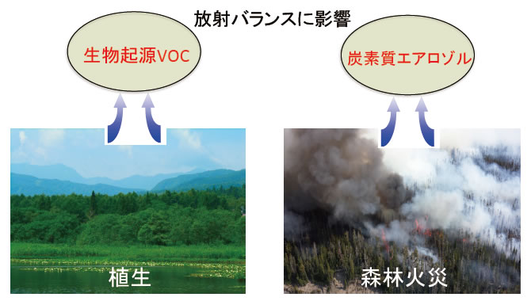

3. エアロゾルはどの程度グローバルな気候に影響を与えるのか？

実は古気候モデルは現時点では過去の温暖な時代をうまく再現できていません（例えば中世温暖期やスーパー間氷期など）。このことは温暖化を増幅させる何らかのフィードバックが存在している可能性を示唆します。
私は生物起源のエアロゾルフィードバック作用がその未知の作用ではなないかと考えています。特に陸上の植物からは、森林火災エアロゾルや２次有機エアロゾルがもたらされます。こうしたエアロゾルは負の放射強制力をもち、地表を冷却する効果があると長い間考えられてきましたが、近年の研究により、実は反対に正の放射強制力をもつことが明らかになってきました。こうしたエアロゾルは温暖化で増大すると言われています。
このことは、それらのエアロゾルが温暖化を増幅させる正のフィードバックとして機能している可能性を示唆します。さらに、陸上の植生分布は海洋循環にも影響を与えることが近年のシミュレーションモデル実験によって示されており、植生は気候変動に対して、これまで考えられていたよりも大きな増幅作用として機能している可能性があります。しかしながら産業革命以前の生物起源エアロゾルの変遷は明らかになっていません。
そこでアイスコア中の有機物トレーサー分析から過去の森林火災と生物起源２次有機エアロゾルの変遷を復元し、気候変動に対する植生エアロゾルフィードバックの実質的なインパクトを検証したいと考えています